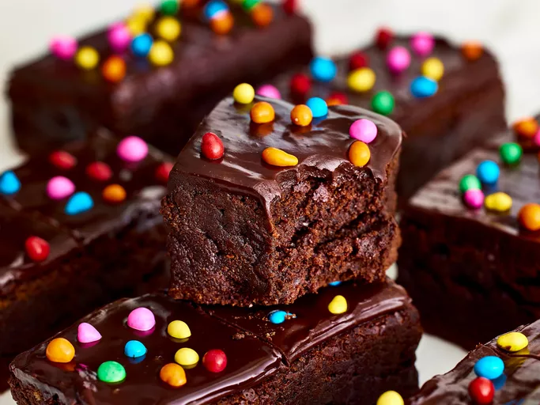

Copycat Cosmic Brownies

Description
Watch out Little Debbie—this copycat recipe for Cosmic Brownies is a dead ringer for (if not better than) the original treat. Our recipe tester went as far as to call them "the most perfect brownie ever" thanks to the combination of a chewy and fudgy brownie, topped with a melt-in-your-mouth ganache, and crunchy sprinkles. This dessert will transport you back to childhood.
Ingredients:
- baking spray
- 14 ounces (60% cacao) bittersweet chocolate bar, coarsely chopped
- 1 1/2 cups unsalted butter
- 2/3 cup unsweetened cocoa
- 6 tablespoons canola oil
- 2 tablespoons vanilla extract
- 2 1/3 cups granulated sugar
- 6 large eggs
Steps:
- Gather all ingredients.
- Cook the noodles.
- Prepare the Brownies.
- Microwave chocolate and butter.
- Whisk sugar and brown sugar into chocolate mixture.
- Transfer to the prepared baking pan.